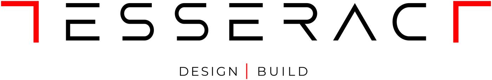

Open a drawing
DWG (any version up to 2018) or DXF. Files are read on this device and never uploaded.
Loading the DWG engine (about 9 MB, cached after the first visit)…
Suggestions or questions: tools@tesseractstudio.co
Properties
Draw order
Model and layouts
Layers
Snap points
Polar tracking
Angles go anticlockwise from the right (0° = east, 90° = north). Snap points such as endpoints win when they are close; a dotted green line shows the angle being tracked.
Object snap tracking
How to use: while placing a point, press and hold, drag onto a snap point (an endpoint, midpoint, centre…) and stay there a moment: a small green + marks it as picked up. Move away and the pointer locks onto dotted green lines through that point; with two picked-up points (or one and the polar line from your last point) it locks onto where the lines cross. Pause on a + again to drop it. Up to 4 points; they clear when the tool ends. With a mouse, resting the pointer on a snap point does the same.
File ready
Save changes?
You have edits that are not saved.